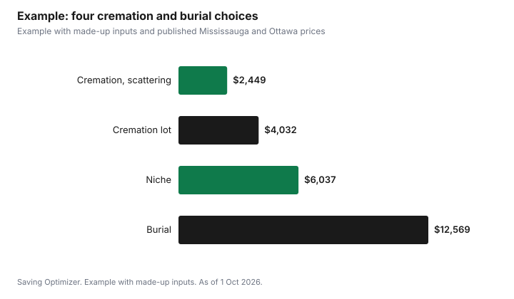

Events · Canada
Cremation vs Burial Costs in Canada: A Line-by-Line Comparison
Cremation usually costs much less than burial because it can skip the casket, the grave and the opening and closing fee. Using published prices as of 1 October 2026, a direct cremation in Ottawa starts at $1,995 including taxes, and scattering in a Mississauga municipal cemetery adds $454.44, about $2,450 in total. A traditional burial in the same cemetery costs $3,515.57 for an adult flat-marker grave, $1,516.87 to open and close it and $336.83 to set a sample marker, $5,369.27 before any funeral home services, casket or marker. Cremation with a niche falls in between. Prices vary widely by city and provider, so compare price lists.
Key takeaways
- Direct cremation: from $1,995 including taxes at one Ottawa provider.
- Mississauga 2026, residents: adult flat-marker grave $3,515.57; opening and closing $1,516.87.
- Cremated remains: scattering $454.44; cremation lot $1,392.80; niche $2,607.83 to $3,155.48.
- Non-residents pay a 10% surcharge on burial rights in Mississauga.
- Ontario providers must give a price list before you sign; you can cancel within 30 days for a full refund.
- Example with made-up inputs: four choices compared.
What each choice includes
| Component | Direct cremation | Cremation with service | Burial |
|---|---|---|---|
| Funeral home services | Minimal (transfer, paperwork) | Yes | Yes |
| Casket or container | Basic container | Container, possibly rental casket | Casket |
| Cremation fee | Yes | Yes | No |
| Grave, lot or niche | Optional | Optional | Grave required |
| Opening and closing | Only if buried or placed in a niche | Same | Yes |
| Marker or engraving | Optional | Optional | Usually |
Published cremation prices
Basic Funerals and Cremation Choices in Ottawa lists direct cremation from $1,995 including taxes. Its page says that covers items such as the transfer, completion of death registration and cremation forms, a cremation container and the cremation, and that urns and executor services add to the cost. Prices in other cities and from other providers differ, so ask for a written price list.
Published cemetery prices
The City of Mississauga publishes 2026 fees for its municipal cemeteries. Grand totals below include burial rights, perpetual care and 13% HST, for residents.
| Item | Resident total |
|---|---|
| Adult single flat marker grave | $3,515.57 |
| Adult single monument grave | $4,866.73 |
| Single cremation lot (2x2) | $1,392.80 |
| Columbarium niche, bottom row | $2,607.83 |
| Columbarium niche, top row | $3,155.48 |
| Scattering cremated remains | $454.44 |
| Service | Total |
|---|---|
| Opening and closing, adult regular depth | $1,516.87 |
| Opening and closing, cremated remains burial | $644.42 |
| Opening and closing, columbarium niche | $465.80 |
| Marker setting, example 18 x 24 in. flat marker | $336.83 |
| Niche engraving | $968.13 |
Mississauga applies a 10% surcharge when non-residents buy burial rights; for example, an adult single flat marker grave is $4,394.46 for a non-resident, including perpetual care and HST. Private and religious cemeteries set their own prices.
Why the grave costs more than it seems
The grave price is only the right to use the plot. Opening and closing, marker setting and any foundation are separate, and the marker or monument itself is bought from a monument dealer or the cemetery. Ontario cemeteries also put part of each sale into a care and maintenance fund for long-term upkeep, which is why Mississauga lists perpetual care as its own column.
Consumer rights in Ontario
Ontario's rules say funeral and cemetery providers must give you a price list before you sign a contract and disclose commissions. You can cancel a contract within 30 days for a full refund; after that, cancellation fees are capped at 10% or $350. If a cemetery's bylaws stop you reselling interment rights you no longer need, the cemetery must buy them back at the current market price, not including the care and maintenance portion.
Other options
Ontario's guidance on final arrangements lists alkaline hydrolysis alongside burial, cremation and scattering, and says alternative disposition operators must be licensed, like funeral homes, cemeteries and crematoriums. Availability and pricing vary, so ask local licensed providers whether they offer it and for a written price list. Families can also combine choices, for example a funeral service with the body present followed by cremation, or keeping part of the remains at home and placing the rest in a niche.
Questions to ask each provider
- What exactly is included in the quoted price, and what costs extra?
- Is the price shown with taxes included?
- Are there extra fees for weekends, oversize remains or a specific container?
- Does the cemetery charge separately for opening and closing, marker setting or a foundation?
- Are there resident and non-resident prices?
- Does the provider receive a commission on any items it recommends?
Other considerations
- Religious or cultural practice may favour one option.
- A grave gives a permanent place to visit; a niche does too, at lower cost.
- Cremation allows a later celebration of life on any timeline.
- Family plots or interment rights you already own change the math.
- Moving away later matters less with cremated remains.
Paying for it
Funeral and burial costs are usually paid from the estate. The CPP death benefit is a one-time $2,500, or $5,000 for some deaths since 1 January 2025 when the person never received CPP or QPP benefits and no spouse or partner qualifies for a survivor's pension. Prepaying in Ontario is protected by trust or insurance rules and guaranteed since 1 July 2012.
Example with made-up inputs
These numbers are an example with made-up inputs, combined with the published prices above. Four choices for a Mississauga resident: A, direct cremation and scattering: $1,995 plus $454.44, $2,449.44. B, direct cremation and a cremation lot: $1,995 plus $1,392.80 plus $644.42 opening, $4,032.22. C, direct cremation and a bottom-row niche with engraving: $1,995 plus $2,607.83 plus $465.80 plus $968.13, $6,036.76. D, burial with a flat marker: made-up funeral home services $3,500, a made-up casket $2,500, a made-up marker $1,200, plus the grave $3,515.57, opening $1,516.87 and marker setting $336.83, $12,569.27.
| Choice | Total | After $2,500 CPP death benefit |
|---|---|---|
| A. Direct cremation and scattering | $2,449.44 | $0 (benefit exceeds cost) |
| B. Direct cremation and cremation lot | $4,032.22 | $1,532.22 |
| C. Direct cremation and niche with engraving | $6,036.76 | $3,536.76 |
| D. Burial with flat marker | $12,569.27 | $10,069.27 |

Steps
- Find out the person's wishes and any religious requirements.
- Get price lists from two or three funeral homes and the cemetery.
- Decide on cremation or burial, then on scattering, lot, niche or grave.
- Ask what is included and what costs extra.
- Apply for the CPP death benefit.
- Keep receipts for the estate.
Common mistakes
- Comparing the grave price alone without opening, closing and marker costs.
- Not asking for itemized price lists.
- Forgetting non-resident surcharges.
- Buying a casket for a cremation without asking about a container.
- Missing the 30-day cancellation window.
Related: funeral costs and the CPP death benefit and prepaid funeral plans.
Sources
- Basic Funerals and Cremation Choices, Direct cremation pricing, Ottawa, as of 1 Oct 2026.
- City of Mississauga, Cemetery fees and charges 2026, mississauga.ca, as of 1 Oct 2026.
- Bereavement Authority of Ontario, Care and maintenance fund, thebao.ca, as of 1 Oct 2026.
- Government of Ontario, Your rights when arranging a funeral, ontario.ca, as of 1 Oct 2026.
- Government of Ontario, Pre-plan and pre-pay final arrangements, ontario.ca, as of 1 Oct 2026.
- Government of Canada, CPP death benefit, canada.ca (Wayback copy), as of 1 Oct 2026.
- Funeral home service, casket and marker amounts in the example are made-up inputs.
Frequently asked questions
Is cremation cheaper than burial in Canada?
Usually. A direct cremation with scattering can cost a fraction of a burial with a grave, opening and closing and a marker.
How much does a direct cremation cost?
One Ottawa provider lists direct cremation from $1,995 including taxes, with urns extra.
How much is a grave in a municipal cemetery?
In Mississauga in 2026, an adult single flat marker grave is $3,515.57 for residents, including perpetual care and HST.
What does opening and closing a grave cost?
In Mississauga in 2026, $1,516.87 for an adult regular-depth grave and $644.42 for cremated remains.
Do non-residents pay more for a grave?
In Mississauga, yes: a 10% surcharge on burial rights.
What are my rights when buying funeral or cemetery services in Ontario?
You must get a price list before signing, and you can cancel within 30 days for a full refund.
Researched and drafted with AI assistance and fact-checked against official Canadian sources. How we create content.
Disclosure: Saving Optimizer may earn a commission if a partner link is added later. No partnership is claimed on this page. Education only.